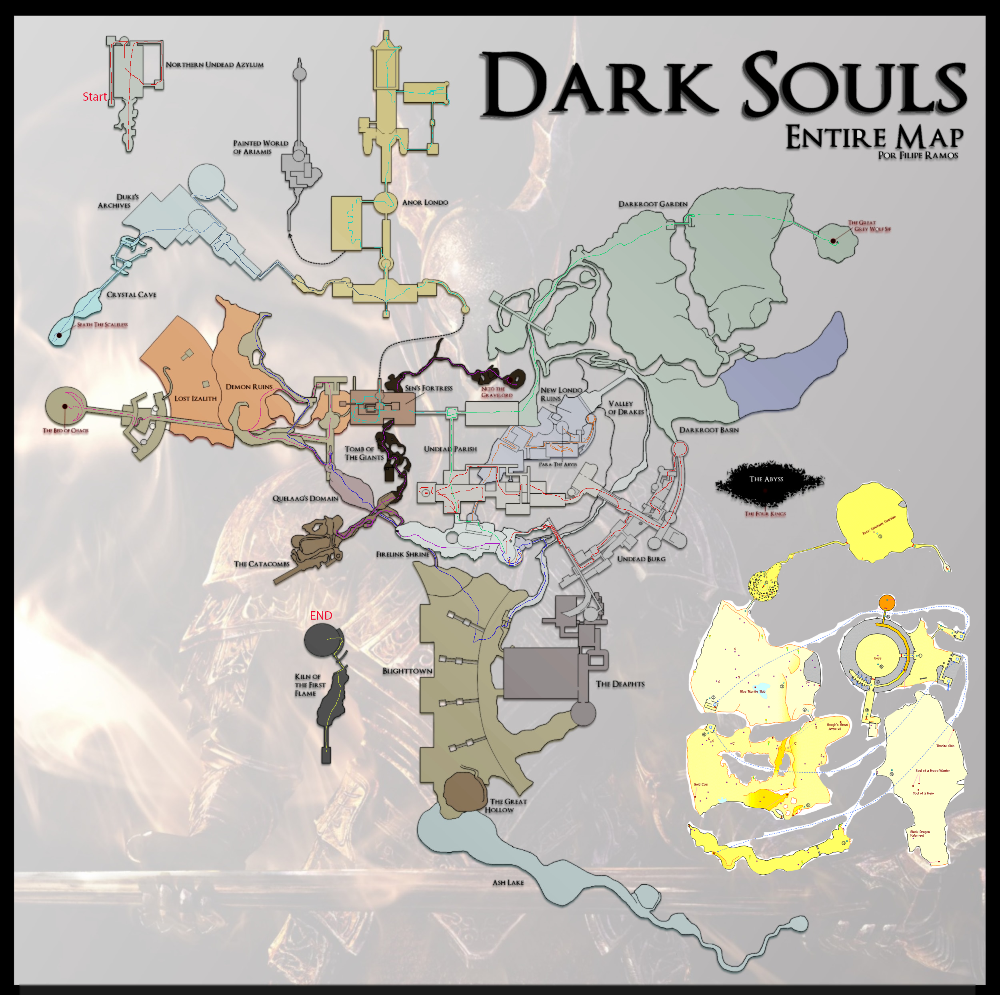
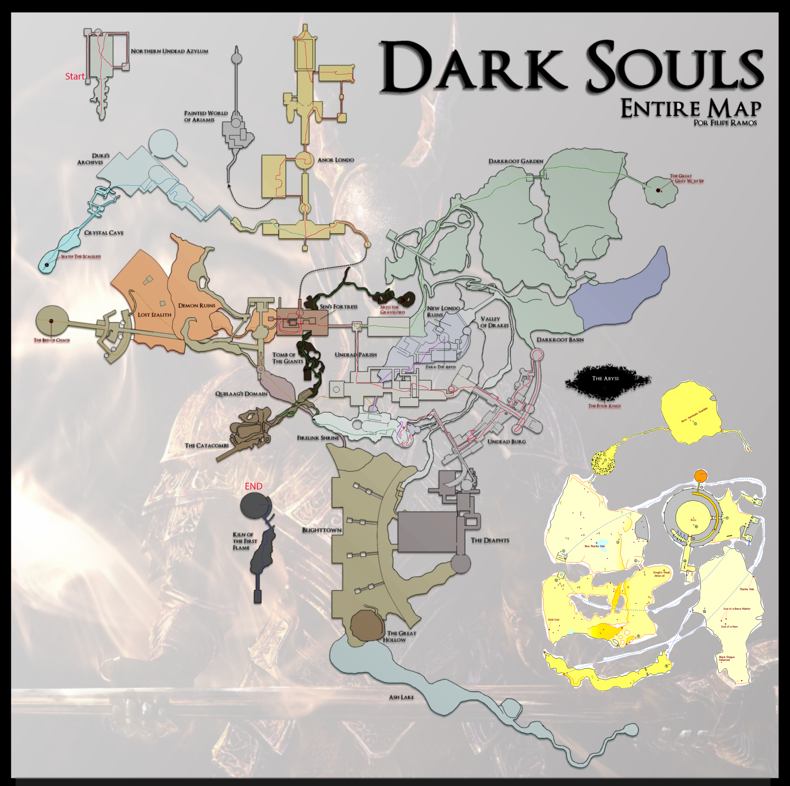

Ever since it's release in 2011, Dark Souls has seen speedrunners find ways to complete the game faster and faster. In this prooject I will look at five routes from throughout the speedrun's history and I will show how these routes evolved over time. I will also look at how these runs are representative of a collective posthumanist art performance.
I took five runs from throughout the history of Dark Souls speedrunning to individually examine and map. One of the runs is the oldest recorded speedrun. One is the world record run as of 4/21/2022. The other three runs were chosen as they are each the world record before a major route change and thus represent a pinnacle of a given route.
To create maps I decided on using photoshop using an accurate fan-created map by Fillipe Ramos as the background and manually drawing the route for each run on a separate layer and then exporting each layer with the background. Because of this, the maps are necessarily imperfect representations of the routes. In addition, I added a map of the DLC areas into the background which is used in one of the runs. These DLC maps were taken from here
To start discussing how the Dark Souls any% speedrun has changed, we must first understand what speedrunning is. Speedrunning is the task of completing a specified goal in a game as quickly as possible, which is then divided into categories based upon the goal of the run, and what restrictions are placed upon it. In the any% category, the goal is the finish the game as quickly as possible while using any tricks or glitches in the game to achieve that goal.
Dark Souls is an action-adventure rpg by From Software released on September 22, 2011. In a normal playthrough,to finish the game a player must do the following after leaving the tutorial area and being dropped at the game's hub area, Firelink Shrine. They first must ring two bells to open the gates of Sen's Fortress. One bell is in the underground area blightown and another in the Undead Parish. After ringing both bells the player must travel through Sen's Fortress and through the following area Anor Londo. After defeating the boss of Anor Londo, the player is given the Lordvessel and tasked with filling it with four lord souls. The four lord souls are acquired from defeating four different lords which each lie at the end of their own respective area. The Bed of Chaos in Izalith, The Four Kings in the Abyss beneath new Londo, Seath in the Duke's Archives, and Nito in the Tomb of the Giants. Once all four lord souls have been acquired, the door to the game's final area, The Kiln of the First Flame, is opened. The game ends once the player defeats the boss at the end of the area.
Less than a month after the game's release, on October 15, a player named Twilight uploaded his run of the game to YouTube with a time of 1:26:28. Twilight begins as the pyromancer class with the master key as his starting gift. After reaching firelink shrine, he first grabs the ring of sacrifice, an item which prevents the player from losing Humanity on death. He then goes to undead burg, where after defeating an early boss, he spends a momnet slicing off the bridge drake's tail to get the Drake Sword. With this powerful early-game weapon, he defeats the gargoyles and rings the first bell. Then, using the master key, he opens a shortcut to blightown, travels to its bottom and defeats the second bell guardian and rings it. Twilight speaks to an npc here to join the Chaos Witch covenent which gives him a powerful pyromancy spell On his way out of blightown he speaks with a pyromancy merchant to buy more spells. These pyromancy spells are his main weapon from this point forth in the run. With the bells rung, he makes his way through Sen's Fortress and Anor Londo, using the new pyromancy spells to defeat enemies, and acquires the lordvessel. Of the four lords Twilight first goes to Duke's Archives. In the Duke's Archives, the player enters a forced death sequence where they are killed by Seath and put into a prison they must escape. Twilight uses the Ring of sacrifice he acquired earlier to avoid losing anything during this sequence. Twilight defeats Seath, and makes his way to the Tomb of the Giants next. Here, he makes a slight detour to kill several npcs before completing the area. The next area he goes through is New Londo, where he makes a stop to pick up a bow and arrow. After defeating the Four Kings, Twilight moves on to the last of the four lords, first by returning to blightown. Throughout the run, Twilight has been gathering items called humanity which drop from bosses and npcs. By donating thirty humanity to the Chaos Witch covenent, a shortcut is opened which allows Twilight to go straight to the boss, Bed of Chaos. Twilight uses the bow acquired ealier to defeat this boss. With all four lord souls acquired, Twilight heads directly to the last boss and finishes the run with a time of 1:26:28.
While Twilight's initial run of the game remained glitchless, glitches would be discovered which allowed runners to skip through areas and defeat bosses faster. These glitches, combined with a change in weapon used, led to a change in the route. Kahmul78's run on January 7, 2015, was the best of this route before a number of other glitches began being discovered. Kahmul's run would begin as the hunter starting class also choosing the master key. After reaching firelink shrine, he immediately heads downward to New Londo. He passes through the first half of area, using the bow he starts with to kill an npc from a distance, to avoid needing to walk to him to get a key. After using the key to open up the second half of the area, Kahmul leaves a back exit of the area and to the Undead Parish. On the way he grabs the black knight halberd, which will be the main weapon for the run. The major glitch used from this point forth is called moveswap1. This glitch is performed by attempting to two-hand a bow and swapping to a different weapon while in the middle of another animation such as a jump. This causes the game to give your right hand weapon the moveset of whatever weapon is in your left hand. The speedrun will perform this glitch before most boss fights to give the Black Knight Halberd the moveset of the estoc to combine the fast attacks of the estoc with the high damage of the halberd. Kahmul's run then plays out similarly to Twilight's with several changes. Kahmul does not acquire the pyromancy spells nor does he gather humanity to open the shortcut as the damage from makes it faster to move through the area normally. When going through the Duke's Archives, Kahmul performs a difficult skip which involves a precise jump off an elevator which avoids the forced death and imprisonment sequence. The optimizations and skips throughout Kahmul's run as well as the increased damage from moveswap allows Kahmul to finish the game in 50:09.
Three major glitches would be discovered over the next two years which significantly alter the route. CapitaineToinon run on June 24, 2017 is the culmination of this new route. CapitaineToinon'r run begins by heading to Undead Burg. While here he performs a series of jumps to reach the Lower Undead Burg early. He comes down here to free a sorcery merchant and purchases the Fall Control spell from him which he will use later. He then continues normally through Undead Burg and on to Undead Parish grabbing the drake sword and the black knight greatsword along the way. In Undead Parish he performs the first major glitch of the run, Sen's gate skip. Normally, when a player jumps off a ledge, the player first passes through a box that sets the camera at a fixed vertical location. They then pass through a kill box which causes them to die. By triggering the camera change but not the killbox, you enter a state the community calls Deathcam. While Deathcam is active, certain objects in the world will be unloaded, such as the gate to Sen's Fortress allowing you to walk through it. CapitaineToinon performs Sen's Skip, then makes his way through Anor Londo and acquires the Lordvessel. On the way to Four Kings, CapitaineToinon uses a glitch with the fall control spell to go through the flooded part of the are while it is still flooded. the way this works is that the fall controls spell delays the damage from lethal falls by a very short time. By quitting out of the game after you land but before the damage is taken, you will load in wherever you landed and not take damage2. His route to Nito and Seath are the same as Kahmul's route, but his route to Bed of Chaos involves the other two major glitches. The first glitch involves using the fall control glitch again to walk around out of bounds in the flooded part of New Londo. The game has the last part of the blighttown area placed just under New Londo, so by going out of bounds in New Londo and using fall control, CapitaineToinon is able to drop to the end of blighttown skipping the majority of the area. The next skip comes right after, where CapitaineToinon angers an npc, aligns himself with a part of a staircase and lets himself get hit by the npc's grab attack. This causes him to get clip through the floor and fall to a later part of the area.The rest of CapitaineToinon's route is the same as the former runs, but these new skips bring his time down to 41:11.
In 2017 a new glitch would be dramatically altered both the route and time of the speedrun. The wrong warp is a glitch that happens whenever the game is confused about where to send a player whenever it teleports them and so it instead puts the player in a preset location for each area. Normally this preset location is at the beginning of the area, however, the preset location for the area where the player places down the Lordvessel is passed the closed doorway that requires the four lord souls. A wrong warp in this location would skip the entire second half of the run. The new glitch discovered allowed players to perform the wrong warp within the limits of the any% run. By performing another glitch called item swap, which allows one to use an item even when it is not normally usable, with the Purple Coward's Crystal,which warps the player to the entrance of the pvp arena, and another item which warps the player, the two warps conflict, resulting in a wrong warp3.
Catalyst's run on August 20,2020 represents the most optimized version of this route. His route is similar to CapitaineToinon's route up until he picks up the Lordvessel, except Catalyst does not go to Lower Undead Burg to free the sorcery merchant. After acquiring the Lordvessel, Catalyst moves to ring the two bells to open up the area to place the lordvessel. To get to Blighttown and the second bell, he performs a new version of Blighttown skip which does not use fall control to get out of bounds. After ringing the second bell, he places the Lordvessel and makes for the Purple Coward's Crystal, which is located at the end of the DLC's first area. To get there he has to travel to the Darkroot Garden, defeat a Hydra and free an npc from a golem. He then needs to go to the entrance of Duke's Archives, defeat another golem there and return to where the npc was in the Garden to enter the DLC. In the DLC Catalyst skips to the end of the first area by performing an air roll down a shortcut elevator. An air roll is doable whenver you have an equipment load in a very precise range and allows you to roll in the air while falling which will negate fall damage. Catalyst finishes the rest of the area and gets the Purple Coward's Crystal. With it he wrong warps to the final area of the game and finishes with a time of 29:54
At the end of 2020 a new method of performing a wrong warp was discovered, which took significantly less time to get the necessary items for. This method, called Homeward Wrong Warp, makes use of the spell Homeward which teleports a player to the most recent bonfire they rested at. Another glitch called spellswap which after performing a complicated series of imputs, allows the player to cast a spell with the animation of another spell. By casting Homeward with the animation of a shorter spell like fireball, the player is able to rest at another bonfire after the animation finishes but before the teleport happens. The game then becomes confused about which bonefire should be your true destination and thus wrong warps you. The world record run as of April 4th, 2022 performed by QueueKyoo uses this new trick in its route. QueueKyoo's strategy follows Catalyst's closely, but QueueKyoo flips the order of things around. Rather than performing Sen's gate skip, he instead rings the two bells first, then goes to acquire the Lordvessel. On the way, he stops at an npc in Firelink Shrine to buy the Homeward spell adn the force spell to swap with. Once he has placed the Lordvessel, her returns to Firelink Shrine, performs the Homeward Wrong Warp to the game's final area. After defeating the last boss QueueKyoo's time is 20:59
The major change we can see througout the years of the Dark Souls speedruns is that gliches and breaking the game have become the forefront of the routes. In Johnathan Hayes' article Fully Optimized: The (Post)Human Art of Speedrunning, Hayes argues that the mastery over a game's systems and all its technical faults with speedrunners have show that the practice of speedrunning could be a Posthumanist Art. This can be seen in the Dark Souls speedruns where runners have come to understand the game in and out. I think Hayes does not put enough focus on the community aspect of speedrunning. Looking at the maps, one can see that while there are dramatic changes between routes, what remains is incredibly similar. Tricks and glitches are discovered and then reused and built upon. QueueKyoo's run still uses the moveswap glitch discovered in the early days of Dark Souls Speedrunning. Speedrunners do not compete against eachother, nor against the game, they compete against the limits of what they can achieve with the game. So I believe the collective building of these routes makes speedrunning not an individual art, but one that represents the work of many runners.
After over a decade since its release, the Dark Souls Speedrun is still being performed and still being optimized. Just a couple of days after begining this project QueueKyoo shaved another nine seconds off his record. As of May 5th, 2022 this is the current record. From Software's most recent game, Elden Ring, already has a world record time of 25:46 by Igothoppz less than three months after the games release. The Wrong Warp glitch originally discovered in Dark Souls is still possible in Elden Ring and is a core part of its speedrun. The Speedrunning community will continue to optimize Dark Souls, using tricks discovered long before. It is only a matter of time before Dark Souls will be finished in under 20 minutes.